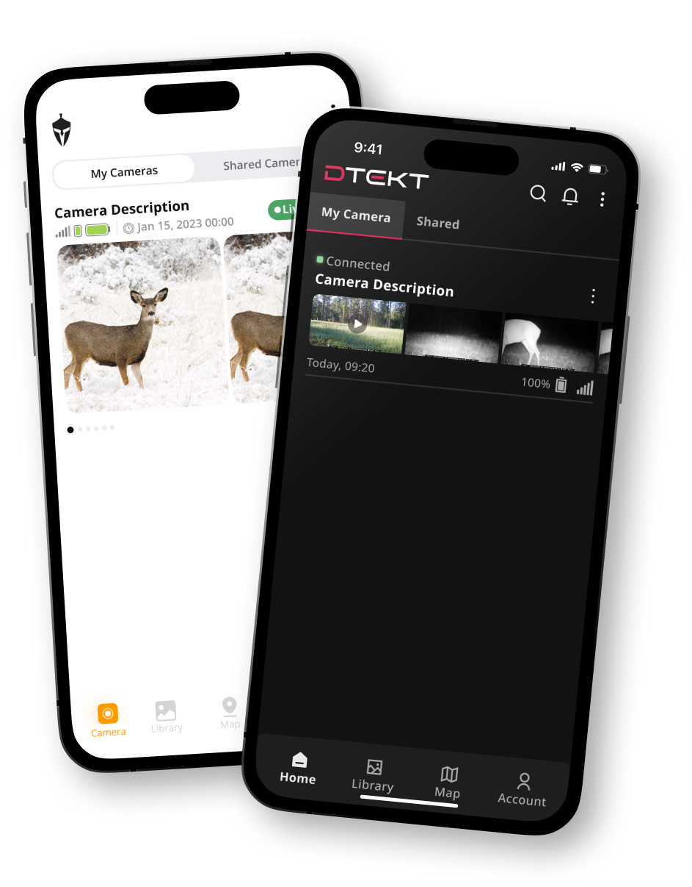
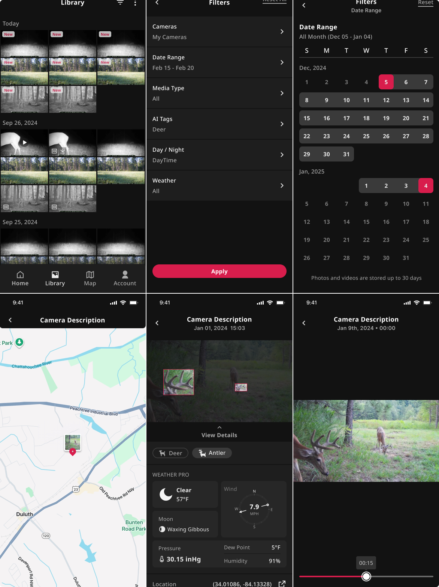
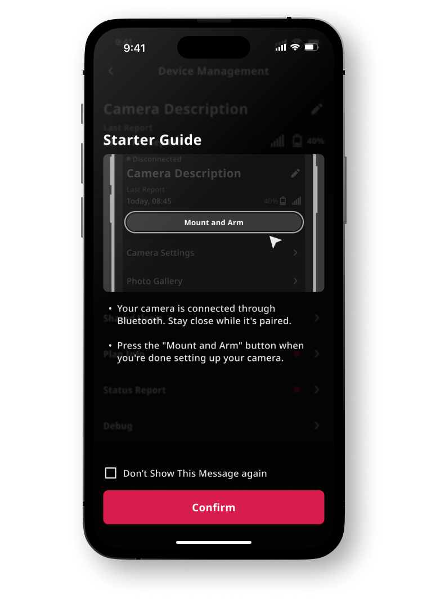
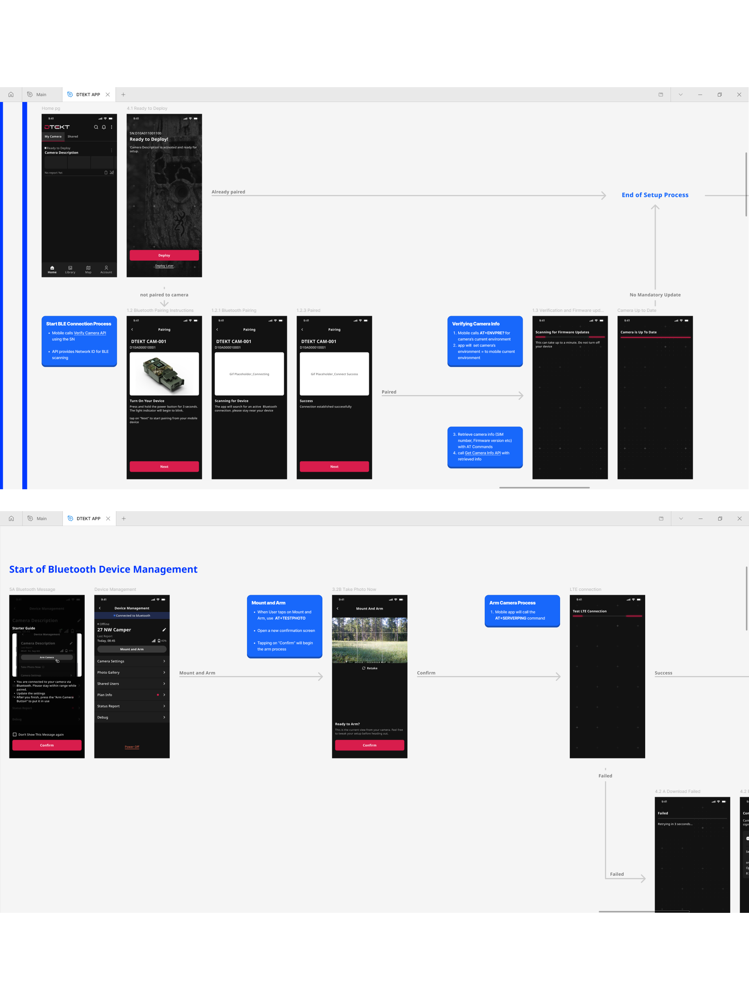
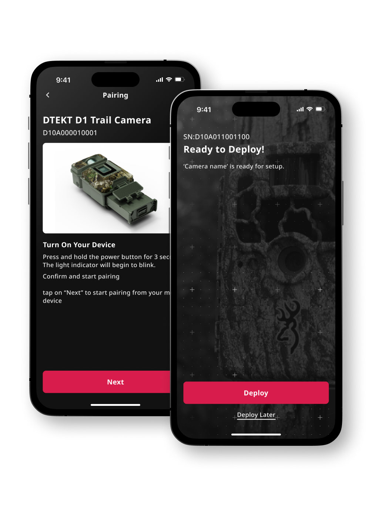

DTEKT
App and Design System Upgrade
Role UX / UI Designer
Scope App, Design System, System Integration, Bluetooth
Tools Figma, Postman, ClickUp, Google Docs
Status Paused in Development
DTEKT is a new trail camera platform built on Spartan Camera, branching into a new market with more hardware to play with, including Bluetooth and AI that helps hunters identify game.
The catch was resources. The development team was already stretched thin across an app, data plans, and a complicated backend, so building a whole second system from scratch was not a realistic option. DTEKT still had to feel like its own product, not just a reskin, and the team could not afford to maintain two completely different systems.
My job was to work with the design lead on the technical details, existing patterns, and user feedback, contributing screens and page designs before we finalized them together. I was also responsible for turning those designs into spec docs for the mobile developers, making sure what we drew was actually feasible with the APIs and hardware we had.
[ 01 ] Product Identity

Our development team was by far the department with the fewest resources, as they were already dealing with a mobile app, data plans, and its complicated backend.
So instead of rebuilding the entire product ecosystem from scratch, we looked at what components we already had and figured out how to make them work for a new product.
Our existing APIs already handled most of the data we needed, so the main challenge was figuring out what we could do with that data while giving DTEKT a visual identity of its own.
+++ Solutions +++

Our approach focused on giving the existing app a visual rework while introducing new features that added value to the overall experience, making things easier to find and simplifying common flows.
One of the bigger changes was a more robust filtering system for the photo gallery, including filters for AI-recognized animals, weather data, and time of day based on the camera's location.
We also updated how the app handled its data, relying more heavily on the APIs to improve loading performance.
+++ Impact +++
Even though I would've loved more flexibility with the designs, I think we were able to provide a lot of value to the new app while keeping development reasonably painless.
To me, that is a job well done. It matters more than just making things pretty without considering how much PTSD you're giving the devs.
[ 02 ] Bluetooth Setup

The biggest feature introduced in DTEKT was Bluetooth communication.
We used that as an opportunity to rework the entire onboarding and camera setup process. This is where I consider my technical background has been the most useful.
Since I was already working closely with the camera specifications and writing documentation for the mobile developers, I had a pretty good understanding of what information the camera could provide and what we could use to automate the setup process.
+++ Solutions +++


Instead of asking users to manually enter a bunch of camera information, like we had been doing with Spartan Camera, we used Bluetooth to pull that information directly from the camera.
The new flow grabs the relevant information automatically and handles most of the setup in the background.
We eneded up with a pretty simple setup process:
Scan the QR code. Select your plan. Wait a moment for the camera to activate and test the connection. And you're good to go.
+++ Impact +++
By reasonably reusing existing APIs and components, we were able to introduce a new visual identity, improve the app experience, and add Bluetooth-powered setup while keeping development reasonably manageable.
This process taught me that not everything needs to be rebuilt from scratch to create a good product. Sometimes all you need is a little cleanup, some automation, and a better way of putting the pieces together.